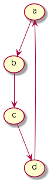
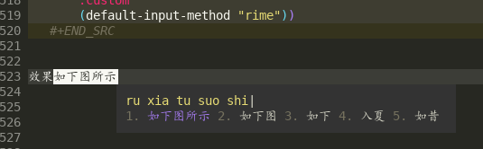

2 所实现功能
2.1 prog related
2.1.1 find definition & application
2.1.2 auto insert and my snippets
2.1.3 details for some progs
2.2 version control
我通过magit去做版本控制，这个东西对新手比较友好。1
我没有为git设置快捷键，因为使用不是很多， git有很多低级功能，如add，commit， push，pull等操作，就不赘述了。
比较常见的进阶问题是关于diff的，此处先不赘述，后面专门写文章介绍。
2.3 take notes
我的笔记通过org mode进行记录，之后发表到我自己的blog上。发表到博客有利于我自己查看。
关于如何使用ORG mode，这应该不是一个问题。我主要对orgmode进行了三个方面的自定义：
2.3.1 insert codes
相当于写了一点点的语法糖，我把它绑定在了“C-c s i”上，代表 src，input。
函数如下：
;; 设置org快速插入源代码 (defun org-insert-src-block (src-code-type) "Insert a `SRC-CODE-TYPE' type source code block in org-mode." (interactive (let ((src-code-types '("emacs-lisp" "python" "C" "sh" "java" "js" "clojure" "C++" "css" "calc" "asymptote" "dot" "gnuplot" "ledger" "lilypond" "mscgen" "octave" "oz" "plantuml" "R" "sass" "screen" "sql" "awk" "ditaa" "haskell" "latex" "lisp" "matlab" "ocaml" "org" "perl" "ruby" "scheme" "sqlite"))) (list (ido-completing-read "Source code type: " src-code-types)))) (progn (newline-and-indent) (insert (format "#+BEGIN_SRC %s\n" src-code-type)) (newline-and-indent) (insert "#+END_SRC\n") (previous-line 2) (org-edit-src-code))) ;; (message "--------------------begin--------------------") ;;将其加载在快捷键上 (add-hook 'org-mode-hook '(lambda () ;; ;; C-TAB for expanding ;; (local-set-key (kbd "C-<tab>") ;; 'yas/expand-from-trigger-key) ;; keybinding for editing source code blocks (local-set-key (kbd "C-c s e") 'org-edit-src-code) ;; keybinding for inserting code blocks (local-set-key (kbd "C-c s i") 'org-insert-src-block )))
对的，我上面的这段代码，就是用这个配置插入的……
2.3.2 运行代码
使用如下配置：
;;code running (org-babel-do-load-languages 'org-babel-load-languages '((emacs-lisp . t) (ditaa . t) (python . t) ;;(sh . t) (latex . t) (plantuml . t) (R . t))) (setq org-plantuml-jar-path (expand-file-name "~/.emacs.d/software/plantuml.jar")) ;;code执行免应答（Eval code without confirm） (setq org-confirm-babel-evaluate nil)
值得注意的是，我还对plantuml特殊照顾。这是为了画UML图的jar包。我用它是为了能够在某些时候画一些简单的图示。
比如下面的代码：
#+begin_src plantuml :file ./img/202201071111.png (a)-->(b) (b)-->(c) (c)--> (d) (d)--> (a)
#+end_src
当我使用“C-c C-c”时，就可以自动插入代码进去了.

当然，正常的编程语言都可以理解，只要你有解释器。比如 python：
return 1+1

2.3.3 插入图片
这个是21世纪记笔记的硬需求。由于我是用的wsl，所以在拥有mac这种电脑之前，我需要解决的一个核心问题是：如何将windows里复制的图片进行粘贴。我把这个流程抽象的很简单，主要是借助powershell。
这个流程是，我通过C-M-a (qq的截图键) 和 M-a (微信的截图键) 选取我希望截图的部分，然后通过SPC-s-i，插入我截取完成的那部分图片，之后，对应的图片会被保存在当前文件所处地区的imgs文件夹中，并基于插入时间产生一个文件。

比如上面这张图片，就是我去那个文件夹下，打开了一个目录之后而得到的。
这一部分的配置如下：
(defun my-yank-image-from-win-clipboard-through-powershell() "to simplify the logic, use c:/Users/Public as temporary directoy, and move it into current directoy" (interactive) (let* ((powershell "/mnt/c/Windows/System32/WindowsPowerShell/v1.0/powershell.exe") (file-name (format-time-string "screenshot_%Y%m%d_%H%M%S.png")) ;; (file-path-powershell (concat "c:/Users/\$env:USERNAME/" file-name)) (file-path-wsl (concat "./images/" file-name)) ) ;; (shell-command (concat powershell " -command \"(Get-Clipboard -Format Image).Save(\\\"C:/Users/\\$env:USERNAME/" file-name "\\\")\"")) (shell-command (concat powershell " -command \"(Get-Clipboard -Format Image).Save(\\\"C:/Users/Public/" file-name "\\\")\"")) (rename-file (concat "/mnt/c/Users/Public/" file-name) file-path-wsl) (insert (concat "[[file:" file-path-wsl "]]")) (message "insert DONE.") ))
其基本原理是：将复制的图片保存在本地，然后移动到目标文件夹下，并在当前光标下插入。
如果你在windows下用emacs，我这里有一套完整的方案，通过C-M-Y便可以开启截图！ 配置如下：
;; "C:\Program Files\IrfanView\i_view64.exe" (defun my-screen-capture () "Take a screenshot into a unique-named file in the current buffer file directory and insert a link to this file." (interactive) (lower-frame) (let ((capture-name (concat (format-time-string "%Y%m%d%H%M%S") ".png")) (capture-save-path (concat (file-name-directory buffer-file-name) "images/"))) (setq capture-file (concat capture-save-path capture-name)) (if *is-windows* ((setq command (concat "\"C://Program Files//IrfanView//i_view64.exe\" /capture=4 /dpi=(300,300) /convert=" (replace-regexp-in-string "/" "\\\\" capture-file))) (shell-command command)) (call-process-shell-command "scrot" nil nil nil nil "-s" capture-file) ) (insert (concat "[[file:./images/" capture-name "]]"))) ) (define-key org-mode-map (kbd "C-M-Y") 'my-screen-capture)
除此之外还有一些别的办法，但是似乎对WSL没用，没用所以我就用不到。
(setq-default org-download-heading-lvl nil) (setq-default org-download-image-dir "./img") ;; 把图片保存在 org 文档所在目录的 img 子目录下 (add-hook 'org-mode-hook #'org-download-enable) ;; 设置插入图片的快捷键 ;; (after-load 'org-download (define-key org-mode-map (kbd "C-c C-x s") 'org-download-screenshot) ;; 插入截图 (define-key org-mode-map (kbd "C-c C-x y") 'org-download-yank)
2.3.4 格式导出
这个是org mode的默认功能，我对它做了增强，主要是确定模板和支持中文。
默认命令是C-c C-e，比如对于这个文件，我可以通过该命令得到导出页面。

对于上述命令，我用到的最多的，是通过org导出word相关格式，html格式，和latex支持的PDF格式。除此之外还有epub游戏。
其中最需要配置的是latex支持的PDF格式，配置方式如下：
;; 使用xelatex，配合当前org文件最开始的配置来正常输出中文 ;; 这类笔记基本不可能是全英文，所以就安心用xelatex算了 (setq org-latex-pdf-process '("xelatex -file-line-error -interaction nonstopmode %f" "bibtex %b" "xelatex -file-line-error -interaction nonstopmode %f" "xelatex -file-line-error -interaction nonstopmode %f")) ;; 生成PDF后清理辅助文件 ;; https://answer-id.com/53623039 (setq org-latex-logfiles-extensions (quote ("lof" "lot" "tex" "tex~" "aux" "idx" "log" "out" "toc" "nav" "snm" "vrb" "dvi" "fdb_latexmk" "blg" "brf" "fls" "entoc" "ps" "spl" "bbl" "xdv"))) ;; 图片默认宽度 (setq org-image-actual-width '(300)) (setq org-export-with-sub-superscripts nil) ;; 不要自动创建备份文件 (setq make-backup-files nil) ;; elegantpaper.cls ;; https://github.com/ElegantLaTeX/ElegantPaper/blob/master/elegantpaper.cls (with-eval-after-load 'ox-latex ;; http://orgmode.org/worg/org-faq.html#using-xelatex-for-pdf-export ;; latexmk runs pdflatex/xelatex (whatever is specified) multiple times ;; automatically to resolve the cross-references. (setq org-latex-pdf-process '("latexmk -xelatex -quiet -shell-escape -f %f")) (setq org-latex-listings t) (add-to-list 'org-latex-classes '("elegantpaper" "\\documentclass[lang=cn]{elegantpaper} [NO-DEFAULT-PACKAGES] [PACKAGES] [EXTRA]" ("\\section{%s}" . "\\section*{%s}") ("\\subsection{%s}" . "\\subsection*{%s}") ("\\subsubsection{%s}" . "\\subsubsection*{%s}") ("\\paragraph{%s}" . "\\paragraph*{%s}") ("\\subparagraph{%s}" . "\\subparagraph*{%s}"))) )
这个东西需要配置开头文件，通过使用 #+latex_class: elegantpaper 的前缀。
其中的elegantpaper，是一个latex中的sty文件。
2.3.5 发布博客
通过org-publish进行绑定，其配置如下，其中敏感信息一竟被删除：
(require 'ox-publish) (setq org-publish-project-alist '( ("blog-notes" :base-directory "~/liangzid.github.io/notes/" :base-extension "org" :publishing-directory "~/liangzid.github.io/" :recursive t :htmlized-source t :html-extension "html" :body-only t :table-of-contents t :publishing-function org-html-publish-to-html :headline-levels 5 :auto-preamble t :section-numbers t :author "LiangZi" :email "liangzid@stu.xjtu.edu.cn" ;; :exclude-tags "noshow" :auto-sitemap t ; 自动生成 sitemap.org 文件 :sitemap-filename "sitemap.org" ; ... call it sitemap.org (it's the default)... :sitemap-title "Sitemap" ; ... with title 'Sitemap'. :sitemap-sort-files anti-chronologically :sitemap-file-entry-format "%d %t" :html-head "<link rel=\"stylesheet\" type=\"text/css\" href=\"https://liangzid.github.io/notes/css/worg.css\"/>" ) ("blog-static" :base-directory "~/liangzid.github.io/notes/" :base-extension "css\\|js\\|png\\|jpg\\|gif\\|pdf\\|mp3\\|ogg\\|swf" :publishing-directory "~/liangzid.github.io/" :html-head "<link rel=\"stylesheet\" type=\"text/css\" href=\"https://liangzid.github.io/notes/css/worg.css\"/>" :recursive t :publishing-function org-publish-attachment ) ("blog" :components ("blog-notes" "blog-static")) ;; 把各部分的配置文件写到这里面来 ))
这里的css配置问题，我还没有解决。
2.4 ssh, with tramp
我之前使用vscode来连接远程服务器写代码，但是vscode比较麻烦，常常需要连接多次，多次输入密码。 除此之外，我面对vscode等工具会产生一种畏惧心态——因为太复杂了，没有emacs简洁简单。
后来，我转向了终端，即在服务器上安装emacs，然后ssh远程过去，然后在终端打开emacs使用。 后来发现，其实emacs竟然也自带ssh工具，这就是tramp。
我其实挺喜欢tramp的，这个东西使用起来很简单，并且记录一次密码之后，就可以永远快速进入了！
假如说断网了，也就是我和服务器失去了连接，没关系，我在本地的buffer上也会有一份副本。当出现多个写而产生的冲突时，会有一个冲突报警。
我主要有若干个实验室的服务器帐号，分别属于不同的ip上（当然，必须是服务器内网访问），所以我写了一个简单的函数，这样我只需要运行SPC-服务器序号，就可以访问他们了！
函数写的十分简单，下面仅以其中一个为例：
(defun ssh-connect-41 () (interactive) (counsel-find-file "/ssh:username@XXX.XXX.XXX.XXX:/home/username/liangzi_need_smile") )
关于快捷键绑定，后面会统一介绍。
2.5 listen to music
是的，还可以听音乐。不过我没有这个习惯。现在的音乐多不合我的耳，我也不喜欢版权文化，因此我已经两年多不怎么听歌了。
可以通过我的仓库中other-files中 netease-cloud-music.el 文件夹获取听音乐功能。此处不赘述。
2.6 play games
略。
2.7 English related
我的英语需求，主要包括：在阅读别人的文档时，提供查单词功能；在自己进行写作时，能够提供一些单词辅助，以及拼写检查。
2.7.1 查单词
我是用的是 youdao-dictionary 这个package，我把它绑定在快捷键C-c y上。我发现这个package很好用，支持当前position单词的翻译，以及对选中文本序列的翻译。
配置较为简单：
(use-package youdao-dictionary :config (global-set-key (kbd "C-c y") 'youdao-dictionary-search-at-point+))
2.7.2 英语自动补全
使用lazycat的english helper，由于这个软件早就停止更新了，所以我也放在了other-files里面。 配置如下：
(require 'company-english-helper) (setq company-english-helper-active-p nil) (global-set-key (kbd "C-c e") 'toggle-company-english-helper)
不要忘记load-path
2.7.3 英语拼写检查
当我写论文时，这个功能很重要。
我主要使用了两种check工具，一个是ispell，一个是flyspell。我不是特别了解这儿这的区别和联系，但是感觉flyspell更加复杂一点，同时我喜欢的是简单的东西。首先介绍ispell。ispell显然，也是linux下某拼写检查工具aspell的emacs前端，直接M-x运行即可。
和大多数GNU工具一样，其使用很简单，当你打开之后，它便会一个个的让你审阅那些单词，并为每一个单词提供可替换的选项。通过这种方式，就可以实现全文的一个拼写检查了。
另一个工具是flyspell，据说功能更加强大，当你打开这个mode之后，他会将所有有问题的word下标发红。我一直没学明白怎么进行最基本的correct，所以这个工具游戏地方 使用我就不得而知了。
2.8 输入法
emacs也自带了一些输入法，来应对一些极端情况。比如我现在使用的wsl，如果我通过X11打开，那么就需要这个子系统配置输入法，否则就无法输入中文，在这种情况下，windows系统默认的输入法是无法使用的。
我为我的emacs配置提供了两种输入法，一种是pyim，这种输入法是elisp实现的，所以不需要额外安装任何软件，可靠性很强。但是确定就是，输入法不太好用……另一种方式是，安装不需要折腾的输入法后端于linux中，并在emacs中提供对应的前端。我目前主要使用这一种方案，也就是狗哥所给出的rime前端。我的配置参考的是lazycat的博客，如下：
(use-package rime :init (setq rime-posframe-properties (list :background-color "#333333" :foreground-color "#dcdccc" :internal-border-width 10)) (setq default-input-method "rime" rime-show-candidate 'posframe) :custom (default-input-method "rime"))
效果如下图所示
